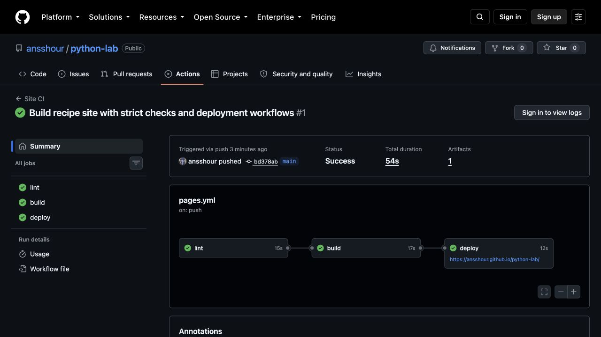
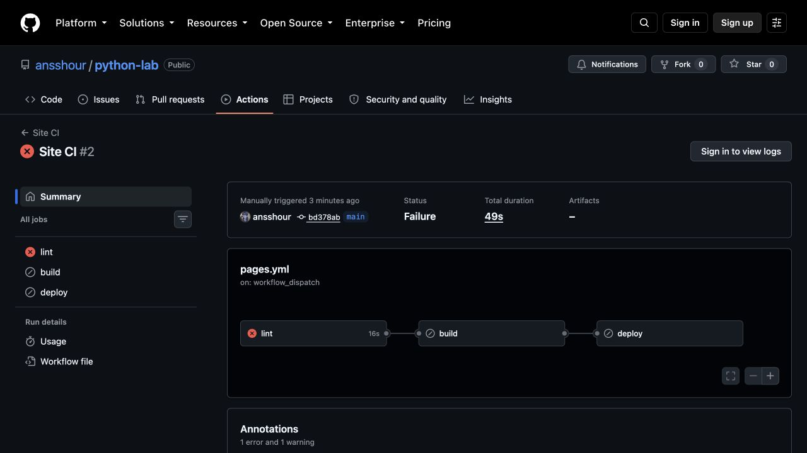
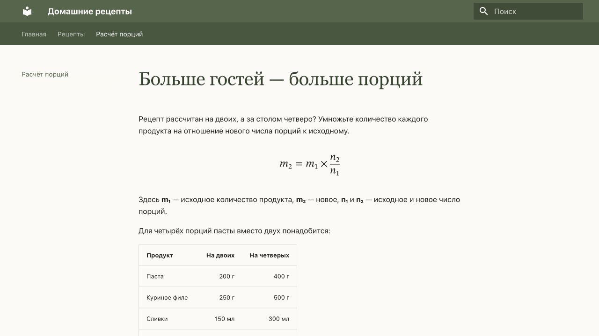

Публикация сайта «Домашние рецепты»
Лабораторная работа · T3 + P1 + челлендж · 18 сентября 2026 года
1. Результат и границы выполненной работы
Создан небольшой сайт с рецептами, поиском и формулой пересчёта порций.
Он собирается автоматически и опубликован на GitHub Pages. Для GitVerse
подготовлен отдельный пайплайн доставки на Helios. Отдельный action опубликован
как репозиторий и версионный релиз и проверен на настоящем временном SSH-сервере.
Работа пока не полностью закрывает задание: нет доступа к GitVerse и Helios,
поэтому запуск на отечественной платформе, её замеры и публикация на Helios
не выполнены. Листинг Marketplace также не опубликован. Ниже эти пункты
отделены от реально полученных результатов.
2. Выбор генератора
Исходный проект уже использовал MkDocs Material. Тема рецептов сохранена по
согласованию. Полное условие T1 не было предоставлено, поэтому ниже — краткое
обоснование выбора, а не заявление о выполнении неизвестных требований T1.
| Генератор |
Что удобно |
Что потребуется для этой работы |
| MkDocs + Material |
Markdown, один файл настроек, готовые навигация и поиск |
Небольшой CSS и страницы с рецептами |
| Sphinx |
Ссылки между разделами, документация API, вывод в HTML и LaTeX |
Дополнительная настройка для небольшого бытового сайта |
| Hugo |
Отдельный исполняемый файл, темы, разные форматы вывода |
Выбор темы и отдельная настройка поиска |
Для текущего небольшого сайта выбран MkDocs 1.6.1 + Material 9.7.7.
Это оценка удобства, а не сравнительный тест скорости генераторов.
Источники: MkDocs,
Sphinx,
Hugo.
3. Ход работы
Окружение и зависимости
В системе команда python3 запускала Python 3.11.7. При этом Python 3.14.7
уже был установлен через Homebrew. Для проекта выбран именно он, версия
записана в .python-version. Повторная установка системного Python не нужна.
На дату проверки это актуальная версия по странице Python.
pip проверен. Отсутствующий virtualenv установлен в изолированное окружение
через uv tool run; проверена версия 21.7.14 и создано временное окружение
на Python 3.14.7 с pip 26.2.1. Рабочее .venv затем синхронизировано через uv.
Каркас сайта уже существовал: сохранены рецепты, добавлены оформление и расчёт порций.
Команды для повторения из чистого каталога проекта:
uv tool run --from virtualenv==21.7.14 virtualenv --python python3.14 .venv
source .venv/bin/activate
python --version
python -m pip --version
python -m pip install --require-hashes -r requirements.txt
python -m mkdocs serve --dev-addr 127.0.0.1:8017
python -m mkdocs build --strict
Рекомендации по установке: virtualenv.
Зависимости зафиксированы в uv.lock, а requirements.txt содержит точные
версии и хеши пакетов. В .gitignore включены окружение, site/, _build/,
кэш и служебные файлы. Образ ОС раннера обновляется платформой, поэтому
фиксация Python и пакетов не означает побайтовую фиксацию всей ОС.
Сборка и адреса страниц
SITE_URL передаётся в site_url. Для GitHub используется
https://ansshour.github.io/python-lab/, для Helios понадобится его реальный
полный адрес с подкаталогом. Опция base_url в MkDocs не задаётся: это название
настройки других генераторов. use_directory_urls: false создаёт явные ссылки
на recipes.html и portions.html, не требующие правил перенаправления сервера.
Для проверки подкаталога выполнена отдельная сборка с адресом
http://127.0.0.1:8018/recipes/. Проверены файлы, ссылки, якоря и HTTP-ответы.
Страница 404.html использует абсолютные пути; проверка учитывает именно
настроенный префикс сайта, а не запрещает все абсолютные ссылки подряд.
mkdocs build --strict дополнен validation.links.anchors: warn и
not_found: warn. Это существенно: в исходной конфигурации отсутствующие
якоря давали INFO, и строгая сборка оставалась успешной.
Публикация на GitHub Pages
Создан публичный репозиторий, файлы закоммичены и отправлены в main.
В Pages установлен источник GitHub Actions. Бейдж в README ссылается
на реальный workflow, а не на статическую картинку.
| Подход |
Что публикуется |
Настройка Pages |
Особенности |
peaceiris/actions-gh-pages |
Готовые файлы коммитятся в ветку gh-pages |
Deploy from a branch |
Нужна запись в репозиторий; история исходников и сайта раздельна |
upload-pages-artifact + deploy-pages |
Архив сборки передаётся сервису Pages |
GitHub Actions |
Не нужна ветка с HTML; права pages: write, id-token: write только у deploy |
Использован второй вариант. Официальный процесс описан в
документации GitHub.
4. T3: отечественные CI/CD-платформы
Сведения проверены по официальным документам на дату отчёта. Доступность
документации проверена из текущей сети; надёжность сервисов за длительный
период не измерялась. «Не подтверждено» не означает «возможности нет».
Раннеры, формат и готовые компоненты
| Критерий |
GitVerse |
SourceCraft |
GitFlic |
| Где выполняются задачи |
Облачные, локальные и организационные раннеры |
Облачные, serverless и пользовательские (self-hosted) воркеры |
Агенты сервиса и собственных установок; регистрация агента проекта ограничена редакциями Enterprise, Onpremise, Atlas |
| Файл |
.gitverse/workflows/*.yml |
.sourcecraft/ci.yaml |
gitflic-ci.yaml |
| Устройство |
jobs, steps, needs, uses |
Рабочие процессы, задания, кубики |
stages, задания, script, rules, needs |
| Близость к GitHub Actions |
Высокая на уровне описания; совместимость конкретных действий нужно проверять |
Есть запуск Actions через кубики; весь workflow не становится автоматически совместимым |
YAML похож на GitLab CI; GitHub workflow нужно переписать |
| Готовые действия |
Actions и примеры starter-workflows |
Переиспользуемые кубики и GitHub Actions |
Шаблоны и переиспользуемые CI-компоненты |
| Важное ограничение |
GitHub-специфичные сервисы не переносятся одним копированием YAML |
Actions и GitLab-пайплайны запускаются только на облачных воркерах |
Не следует считать любой GitLab YAML совместимым без проверки справочника |
Основание: GitVerse: синтаксис,
раннеры,
SourceCraft: CI/CD,
кубики,
воркеры SourceCraft,
GitFlic: агенты,
YAML,
компоненты.
Секреты, файлы и бесплатный тариф
| Критерий |
GitVerse |
SourceCraft |
GitFlic |
| Секреты |
Хранилище платформы, обращения через secrets |
Секреты и переменные окружения |
Переменные задач, интеграции с хранилищами секретов; возможности зависят от редакции |
| Артефакты |
Upload/download actions, передача между jobs |
Артефакты кубиков и передача данных между заданиями |
artifacts, зависимости заданий |
| Кэш |
actions/cache, ключ по файлу зависимостей |
Механизм нужно выбирать для конкретного режима кубика; перенос actions/cache требует испытания |
cache.paths, cache.key |
| Бесплатное время CI |
1000 мин/месяц для публичных, 500 для приватных репозиториев |
Free: 1000 мин/месяц для публичных и приватных репозиториев, до 5 параллельных процессов |
Единую актуальную квоту бесплатных облачных минут подтвердить не удалось; уточнить в аккаунте |
| Лимиты файлов |
Артефакты: 500 МБ, обычно 30 дней |
До 100 МБ артефактов кубика, 10 ГБ на организацию; хранение 14 дней |
Определяются редакцией и настройками сервиса |
| Документация: оценка автора |
Удобные короткие примеры; версии Actions всё равно надо проверять |
Подробные справочники, но больше новых понятий |
Подробный YAML-справочник; важно отличать облако от собственной установки |
Источники: лимиты GitVerse,
кэш GitVerse,
артефакты GitVerse,
тарифы SourceCraft,
лимиты SourceCraft,
настройки GitFlic,
тарификация GitFlic.
Бесплатная команда GitFlic до пяти человек не доказывает наличие бесплатного
облачного раннера. Квоты нельзя смешивать с ценой лицензии.
Собственный домен и HTTPS сайта определяются хостингом. Наличие CI само по
себе их не предоставляет. git push запускает сборку исходников; готовый
сайт можно затем отправить через SSH или S3 API из любого подходящего раннера.
Три варианта размещения
| Критерий |
Helios ИТМО |
Yandex Object Storage |
Selectel S3 |
| Модель |
Учебный сервер и каталог пользователя |
Бакет с режимом статического сайта |
Публичный бакет с режимом сайта |
| Доставка |
SSH, при наличии rsync — синхронизация; SFTP/SCP зависят от сервера |
S3 API, например aws s3 sync |
S3 API; основной вариант — AWS CLI |
| Свой домен |
Требует согласования с администратором; не подтверждён для аккаунта |
Поддерживается настройкой DNS и бакета |
Поддерживается пользовательский домен |
| HTTPS |
Зависит от предоставленного публичного адреса; ещё не проверен |
Есть HTTPS, для своего домена нужна настройка сертификата |
Для пользовательского домена добавляется TLS-сертификат |
| Бесплатный вариант |
Учебная учётная запись; размер и срок доступа нужно уточнить |
Тарифицируются ресурсы; стартовые льготы не следует считать бессрочным бесплатным хостингом |
Тарифицируется хранение и другие ресурсы; бесплатная квота здесь не подтверждена |
| Обслуживание |
Правила, квоты и доступ задаёт вуз |
Веб-сервер обслуживает провайдер |
Веб-сервер обслуживает провайдер |
| Документация и доступность |
Найдены учебные материалы, но актуальные параметры аккаунта неизвестны |
Подробные инструкции по сайту, доступу и тарифам доступны |
Подробные инструкции по бакету, домену и TLS доступны |
| Ограничение для проекта |
Без аккаунта нельзя проверить доставку и публичный URL |
Требуются облачный аккаунт, бакет и платёжные условия |
Требуются аккаунт, бакет и платёжные условия |
Для Helios учебная памятка ИТМО
описывает SSH; документ старый, поэтому его порт не зашит как обязательный.
Путь public_html/recipes в примере action — пример, а не проверенный
путь конкретного пользователя. Не следует угадывать URL по SSH-имени.
Сведения о хостингах: Yandex: статический сайт,
тарифы,
Selectel: сайт,
домены,
TLS,
AWS CLI.
WebDAV и FTP в этом проекте не используются; их наличие у каждой площадки
не предполагается автоматически. Собственные CI-раннеры, кэш и секреты
к режиму статического хостинга бакета не относятся.
Сколько стоит перенос workflow
Для P1 выбран GitVerse: структура ближе к уже работающему GitHub workflow.
Следующая таблица — плановая оценка труда для небольшого сайта при готовых
аккаунтах, а не замер выполненной миграции.
| Работа |
Что переносится |
Что меняется |
Оценка |
| GitHub → GitVerse |
Markdown, Python-скрипты, зависимости, команды сборки, схема needs |
Каталог workflow, github → gitverse, версии/адреса actions, секреты, доставка на Helios |
2–4 часа |
| GitHub → SourceCraft |
Исходники, shell/Python-команды, зависимости |
Описание через tasks/cubes, события, условия, передача файлов и режим запуска Actions |
4–8 часов |
| GitHub → GitFlic |
Исходники и команды |
gitflic-ci.yaml, stages/rules, переменные, кэш, артефакты, настройка агента |
4–8 часов |
| Проверка Helios |
Статические HTML/CSS/JS |
SSH-параметры, ключ сервера, права файлов, полный URL |
1–3 часа после выдачи доступа |
actions/deploy-pages и GitHub Pages OIDC нельзя превратить в публикацию
на Helios заменой имени платформы: это другой сервис и другой протокол.
Вместо них используется SSH-action. GitHub environments и разрешения
pages: write в отечественный workflow не переносились.
Практическая тонкость: GitVerse может обрабатывать также .github/workflows.
При импорте проекта нужно отключить GitHub workflows в копии GitVerse и оставить
.gitverse/workflows/site.yml, иначе возможны лишние запуски. Сам GitHub
репозиторий менять ради этого не требуется.
5. P1: устройство пайплайна
Подготовлен .gitverse/workflows/site.yml. Состояние: реализация готова к
подключению аккаунта, выполнение на GitVerse не проверено. GitHub-аналог
реально запущен и использован для проверки общей логики.
push / pull_request / ручной запуск
│
▼
lint: орфография → mkdocs --strict → ссылки и HTML
│ needs: lint
▼
build: чистое окружение → зависимости → HTML → артефакт
│ needs: build
▼
deploy: только main, не pull_request
GitHub Pages / SSH → Helios
| Событие |
lint |
build |
deploy |
Push в main |
Да |
После успешного lint |
После успешной сборки |
| Push в другую ветку |
Да |
Да |
Пропущен |
| Pull request |
Да |
Да |
Пропущен |
Ручной запуск в main |
Да |
Да |
Да, если проверки прошли |
| Ручной запуск в другой ветке |
Да |
Да |
Пропущен |
Учебная битая ссылка в GitHub (break_links=true) |
Завершается ошибкой |
Пропущен |
Пропущен |
| Push тега |
Не запускается основным workflow |
— |
— |
Дополнительная ветка codex/verify-build-only проверена настоящим push:
запуск
завершил lint/build успешно, deploy получил skipped.
Временные копии сайта также проверены с опечаткой и отсутствующим якорем:
обе ошибки обнаружены, исходные страницы не изменены.
В GitHub используются отдельные jobs и передача артефакта Pages. В GitVerse
build загружает website, deploy скачивает именно этот артефакт и отправляет
его на сервер. Повторная сборка в deploy не выполняется.
Кэшируется каталог пакетов, а не .venv. Ключ включает ОС, Python и хеш
requirements.txt. При изменении зависимостей создаётся другой кэш.
GitHub использует кэш setup-python, GitVerse — actions/cache@v3, как
в официальном примере платформы. Эти версии не объявляются универсально
совместимыми: проверка на GitVerse ещё предстоит.
Секреты Helios будут переданы только в deploy через Secrets платформы.
В GitHub создан безвредный случайный тестовый секрет LAB_MASK_PROBE;
в логе получено Mask probe: ***. Это доказывает маскирование на GitHub,
но не на GitVerse. Приватный ключ Helios ещё не предоставлялся.
Успешный и проваленный запуск


В проваленном запуске в рабочую копию раннера добавлена ссылка на
missing-page.md. Исходный файл в репозитории не испорчен.
Полный сохранённый лог показывает
предупреждение о несуществующем документе, затем остановку строгой сборки.
build и deploy не выполнялись. После обычного запуска публикация снова успешна.
Что нужно для завершения P1 на GitVerse
- Создать репозиторий GitVerse и загрузить проект, отключив в этой копии GitHub workflows.
- Включить облачный раннер. Проверить доступ к Python 3.14.7, PyPI и используемым actions.
- Записать переменные
HELIOS_HOST, HELIOS_USER, HELIOS_PORT,
HELIOS_PATH, HELIOS_SITE_URL. Записать секреты HELIOS_SSH_KEY и
HELIOS_KNOWN_HOSTS. Отпечаток сервера сверить с администратором.
- На Helios проверить rsync, каталог, права и соответствие каталога публичному URL.
- Запустить main и отдельную ветку, затем намеренно испортить ссылку в учебной ветке.
- Создать безвредный тестовый секрет
LAB_MASK_PROBE и запустить
.gitverse/workflows/benchmark.yml: повторить измерение кэша и маскирования именно
на GitVerse. Добавить его бейдж, ссылки, логи и скриншоты в отчёт.
6. Измерения и проверка результата
Замер выполнен time.perf_counter вокруг отдельных команд. На одном чистом
GitHub runner созданы два разных пустых окружения; первая установка заполняет
новый каталог pip-кэша, вторая использует его. Так сравнивается установка с
холодным и тёплым кэшем пакетов. Время скачивания архива кэша платформы
в этот эксперимент не включено. Это один опыт, не статистическая оценка.
| Операция, Ubuntu 24.04 / Python 3.14.7 |
Без кэша, с |
С кэшем, с |
| Установка зафиксированных зависимостей |
10,375 |
7,096 |
| Строгая сборка после установки |
0,500 |
0,412 |
| Установка + сборка |
10,875 |
7,508 |
| Другой замер |
Значение |
Как измерено |
| Локальная строгая сборка |
0,874 с |
Полное время команды, macOS ARM64 |
| Job lint первого успешного CI |
15 с |
startedAt / completedAt GitHub API |
| Job build первого успешного CI |
17 с |
Включает подготовку и отправку артефакта |
| Job deploy первого успешного CI |
12 с |
Включает подготовку и вызов Pages |
| Первый SSH upload в повторном тесте |
2,251 с |
Время внутри action, временный сервер |
SSH upload с --delete |
0,508 с |
Тот же временный сервер |
| Развёртывание на Helios |
Не измерено |
Нет доступа |
| Холодный/тёплый запуск GitVerse |
Не измерено |
Нет аккаунта |
| Ресурс опубликованного сайта |
Размер без HTTP-сжатия, байт |
HTTP |
index.html |
17 945 |
200 |
recipes.html |
22 568 |
200 |
portions.html |
15 230 |
200 |
search/search_index.json |
19 341 |
200 |
Это размеры самих ответов HTML/JSON, а не суммарный вес страницы со всеми CSS
и JavaScript. Исходные значения: время,
размеры, jobs,
SSH и маскирование.
| Проверка |
Полученный результат |
| Строгая сборка |
Успех локально и на чистом GitHub runner |
| Русская орфография |
Успех; проверяются словоформы, не стиль и грамматика |
| Внутренние ссылки и якоря |
Файлы и якоря существуют |
| Контрольная строка |
«Домашние рецепты» найдена в опубликованном HTML |
| Поиск в браузере |
Запрос «сырники» выдаёт результаты с правильными ссылками |
Подкаталог /recipes/ |
Сборка, ссылки и HTTP-проверки проходят |
| Формула без CDN |
MathML отображается при CSP, запрещающей внешние ресурсы |
| Маскирование GitHub |
Безвредный секрет заменён на *** |
| Доставка action |
Файл совпадает с источником; лишний файл сохраняется без delete и удаляется с delete |

Для проверки CDN использован scripts/preview_offline.py: сервер добавляет
Content-Security-Policy с разрешением ресурсов только своего origin.
Формула есть непосредственно в HTML; в CSS нет внешних шрифтов. Это проверка
недоступности сторонних ресурсов, а не обещание работы всего сайта без интернета
и предварительной загрузки. Для старых браузеров оставлена текстовая формула.
7. Отладка: реальные ошибки
| Ошибка / сообщение |
Гипотеза |
Проверка |
Решение |
No module named virtualenv |
Модуль отсутствует у выбранного Python |
Запуск python3 -m virtualenv --version |
Изолированная установка и запуск virtualenv 21.7.14 через uv |
does not contain an anchor '#сырники' |
Обычный slugifier удаляет кириллицу |
В исходном HTML заголовки получили _1, _2 и подобные ID |
Unicode slugifier из pymdownx; отсутствующие якоря повышены до warn |
OSError: [Errno 48] Address already in use |
Порт 8000 занят |
Повторный запуск с другим портом |
Предпросмотр на 8017; чужой процесс не остановлен |
неизвестное слово: рецепты и много похожих сообщений |
Первый словарь не покрывает русские словоформы |
Проверка обычных слов из исходных рецептов |
Переход с pyspellchecker на pymorphy3; словарь исключений не раздувался |
Несуществующий missing-page.md, exit code 1 |
Strict должен блокировать публикацию |
Намеренный ручной CI-запуск |
lint падает, build/deploy пропущены; нормальный запуск проходит |
Node.js 20 is deprecated |
Старые версии официальных actions |
Просмотр annotations успешного запуска |
Обновлены GitHub actions до актуальных выпусков; повторный CI успешен |
CERTIFICATE_VERIFY_FAILED в системном Python 3.11 |
У старого Python другая настройка доверенных сертификатов |
Тот же запрос через окружение Python 3.14.7 |
Использовано проектное окружение; проверка TLS не отключалась |
| Одноразовый SSH-ключ теста виден в параметрах шага |
Сгенерированное env-значение не становится секретом платформы автоматически |
Просмотр первого интеграционного лога |
Добавлен add-mask до использования ключа; повторный запуск успешен. Это ключ уничтоженного тестового сервера, не Helios |
Сведения о секрете Helios не выдумывались и не подставлялись в тест. В репозитории
нет приватных ключей; в сохранённом фрагменте лога только итоговые показатели.
Первые ошибки окружения наблюдались в ходе работы; для них не создавались
искусственные скриншоты. Для намеренного CI-провала сохранён настоящий лог.
8. Челлендж: action для Helios
В отдельном репозитории находится composite action с action.yml, inputs,
outputs, описанием и branding. Есть MIT, README с примером, теги v1.0.0 и v1.
Поддержаны хост, логин, порт, исходный и целевой каталоги, ключ, known-hosts
и переключатель delete. По умолчанию удаления нет.
Action использует rsync по SSH, проверяет ключ сервера и удаляет временный
приватный ключ после выполнения. Пути с пробелами, .., корневой каталог,
пустой источник и символические ссылки отклоняются. Это намеренные ограничения
первой версии, описанные в README. Публикация не атомарная: при обрыве передачи
каталог может содержать часть новой версии; для учебного сайта это допустимое
ограничение, для важного сайта нужны каталоги релизов и переключение ссылки.
Workflow-потребитель
вызывает опубликованный action. Тест использует настоящий SSH и rsync, сравнивает
загруженный файл и проверяет обе ветки поведения delete. Совместимость
с фактической ОС, путями и rsync Helios пока не подтверждена.
Marketplace не равен GitHub Release. Релиз уже опубликован, но листинг
Marketplace не завершён: в доступном браузере нет авторизации GitHub.
Для окончания нужно открыть редактирование релиза v1.0.0, выбрать публикацию
в Marketplace, проверить название и категории и подтвердить условия, если
GitHub их предложит. До появления реальной страницы Marketplace нельзя
указывать, что челлендж выполнен полностью. Порядок оформления и требование
принять соглашение описаны в документации Marketplace.
9. Вывод
Для небольших учебных заметок, инструкций и результатов простых исследований
подходит MkDocs Material с Markdown, фиксированными зависимостями и строгой
сборкой. Текущий пример использует рецепты, а формула показывает, как добавить
простое вычисление без внешнего сервиса.
Для размещения в отечественной среде выбран GitVerse + Helios после выдачи
доступа: команды сборки сохраняются, меняется доставка файлов. Если нужен
собственный домен и независимость от учебного аккаунта, удобнее рассмотреть
Yandex Object Storage или Selectel S3 и заранее согласовать расходы.
Рекомендация меняется, если нужны сложные научные ссылки, библиография и
единый вывод в PDF — тогда стоит сравнить Sphinx/MyST; если нужен очень большой
контентный сайт — отдельно измерить Hugo. Для закрытых данных необходимы
контроль доступа и отдельная проверка условий размещения. Для формул сложнее
нашей простой дроби лучше локально поставляемый MathJax/KaTeX либо обработка
на этапе сборки. Автоматическое обновление на новую основную версию MkDocs
без проверки темы и расширений не включено.
Приложение. Тексты пайплайнов
Актуальные YAML-файлы с комментариями приведены ниже. GitVerse-файл является
подготовленной конфигурацией, а не доказательством удалённого запуска.
.github/workflows/pages.yml
name: Site CI
on:
push:
branches: ['**']
pull_request:
workflow_dispatch:
inputs:
break_links:
description: 'Учебный провал: добавить несуществующую ссылку'
type: boolean
default: false
permissions:
contents: read
concurrency:
group: pages-${{ github.ref }}
cancel-in-progress: false
jobs:
lint:
runs-on: ubuntu-24.04
steps:
- uses: actions/checkout@v7.0.1
- uses: actions/setup-python@v7.0.0
with:
python-version: '3.14.7'
cache: pip
- run: python -m pip install --require-hashes -r requirements.txt
- run: python scripts/check_spelling.py
# Намеренная ошибка меняет только рабочую копию раннера.
- if: github.event_name == 'workflow_dispatch' && inputs.break_links
run: printf '\n[Broken link](missing-page.md)\n' >> docs/index.md
- run: python scripts/measure.py strict python -m mkdocs build --strict
- run: python scripts/check_site.py
build:
needs: lint
runs-on: ubuntu-24.04
env:
SITE_URL: https://ansshour.github.io/python-lab/
steps:
- uses: actions/checkout@v7.0.1
- uses: actions/setup-python@v7.0.0
with:
python-version: '3.14.7'
cache: pip
- run: python -m pip install --require-hashes -r requirements.txt
- run: python scripts/measure.py build python -m mkdocs build --strict
- run: python scripts/check_site.py
- uses: actions/upload-pages-artifact@v5.0.0
with:
path: site
deploy:
needs: build
if: github.ref == 'refs/heads/main' && github.event_name != 'pull_request'
runs-on: ubuntu-24.04
permissions:
pages: write
id-token: write
environment:
name: github-pages
url: ${{ steps.deployment.outputs.page_url }}
steps:
- uses: actions/deploy-pages@v5.0.1
id: deployment
.gitverse/workflows/site.yml
# Подготовлено по документации GitVerse. Реальный запуск требует аккаунта.
name: Site on Helios
on:
push:
branches: ['**']
pull_request:
workflow_dispatch:
jobs:
lint:
runs-on: ubuntu-latest
steps:
- uses: actions/checkout@v4
- uses: actions/setup-python@v5
with:
python-version: '3.14.7'
- uses: actions/cache@v3
with:
path: ~/.cache/pip
key: pip-${{ runner.os }}-3.14.7-${{ hashFiles('requirements.txt') }}
- run: python -m pip install --require-hashes -r requirements.txt
- run: python scripts/check_spelling.py
- run: python -m mkdocs build --strict
- run: python scripts/check_site.py
build:
needs: lint
runs-on: ubuntu-latest
env:
SITE_URL: ${{ vars.HELIOS_SITE_URL }}
steps:
- uses: actions/checkout@v4
- uses: actions/setup-python@v5
with:
python-version: '3.14.7'
- uses: actions/cache@v3
with:
path: ~/.cache/pip
key: pip-${{ runner.os }}-3.14.7-${{ hashFiles('requirements.txt') }}
- run: python -m pip install --require-hashes -r requirements.txt
- run: python scripts/measure.py build python -m mkdocs build --strict
- run: python scripts/check_site.py
- uses: actions/upload-artifact@v4
with:
name: website
path: site
deploy:
needs: build
if: gitverse.ref == 'refs/heads/main' && gitverse.event_name != 'pull_request'
runs-on: ubuntu-latest
steps:
- uses: actions/checkout@v4
- uses: actions/download-artifact@v4
with:
name: website
path: site
# GitVerse получает action из GitHub. Доступность нужно проверить на раннере.
- uses: https://github.com/ansshour/helios-deploy-action@v1
with:
host: ${{ vars.HELIOS_HOST }}
username: ${{ vars.HELIOS_USER }}
port: ${{ vars.HELIOS_PORT }}
destination: ${{ vars.HELIOS_PATH }}
source: site
key: ${{ secrets.HELIOS_SSH_KEY }}
known-hosts: ${{ secrets.HELIOS_KNOWN_HOSTS }}
delete: 'false'
- run: python3 scripts/smoke_url.py "$SITE_URL"
env:
SITE_URL: ${{ vars.HELIOS_SITE_URL }}
.github/workflows/benchmark.yml
name: Dependency benchmark
on:
workflow_dispatch:
permissions:
contents: read
jobs:
measure:
runs-on: ubuntu-24.04
steps:
- uses: actions/checkout@v7.0.1
- uses: actions/setup-python@v7.0.0
with:
python-version: '3.14.7'
# Два чистых окружения; кэш второй установки прогрет первой.
- run: |
python -m venv /tmp/bench-cold
python -m venv /tmp/bench-warm
python scripts/measure.py ci-install-cold /tmp/bench-cold/bin/pip install --cache-dir /tmp/lab-pip-cache --require-hashes -r requirements.txt
python scripts/measure.py ci-build-cold /tmp/bench-cold/bin/python -m mkdocs build --strict
python scripts/measure.py ci-install-warm /tmp/bench-warm/bin/pip install --cache-dir /tmp/lab-pip-cache --require-hashes -r requirements.txt
python scripts/measure.py ci-build-warm /tmp/bench-warm/bin/python -m mkdocs build --strict
- uses: actions/upload-artifact@v7.0.1
with:
name: benchmark
path: report/evidence/ci-*.log
- uses: actions/upload-artifact@v7.0.1
with:
name: timings
path: report/evidence/timings.csv
.gitverse/workflows/benchmark.yml
# Не запускался: требуется аккаунт GitVerse.
name: GitVerse dependency benchmark
on:
workflow_dispatch:
jobs:
measure:
runs-on: ubuntu-latest
steps:
- uses: actions/checkout@v4
- uses: actions/setup-python@v5
with:
python-version: '3.14.7'
# Два чистых окружения; кэш второй установки прогрет первой.
- run: |
python -m venv /tmp/bench-cold
python -m venv /tmp/bench-warm
python scripts/measure.py ci-install-cold /tmp/bench-cold/bin/pip install --cache-dir /tmp/lab-pip-cache --require-hashes -r requirements.txt
python scripts/measure.py ci-build-cold /tmp/bench-cold/bin/python -m mkdocs build --strict
python scripts/measure.py ci-install-warm /tmp/bench-warm/bin/pip install --cache-dir /tmp/lab-pip-cache --require-hashes -r requirements.txt
python scripts/measure.py ci-build-warm /tmp/bench-warm/bin/python -m mkdocs build --strict
- name: Check masking of a harmless test secret
env:
MASK_PROBE: ${{ secrets.LAB_MASK_PROBE }}
run: |
test -n "$MASK_PROBE"
printf 'Mask probe: %s\n' "$MASK_PROBE"
- uses: actions/upload-artifact@v4
with:
name: benchmark
path: report/evidence/ci-*.log
- uses: actions/upload-artifact@v4
with:
name: timings
path: report/evidence/timings.csv
.github/workflows/action-check.yml
name: Action integration
on:
workflow_dispatch:
push:
paths: ['.github/workflows/action-check.yml']
permissions:
contents: read
jobs:
ssh-transfer:
runs-on: ubuntu-24.04
steps:
- uses: actions/checkout@v7.0.1
- name: Start disposable SSH fixture
id: fixture
shell: bash
run: |
sudo apt-get update -qq
sudo apt-get install -y -qq openssh-server rsync
mkdir -p /tmp/helios-fixture/source /tmp/helios-fixture/target
echo fresh > /tmp/helios-fixture/source/index.html
echo stale > /tmp/helios-fixture/target/stale.txt
ssh-keygen -q -t ed25519 -N '' -f /tmp/helios-fixture/client
ssh-keygen -q -t ed25519 -N '' -f /tmp/helios-fixture/host
while IFS= read -r line; do echo "::add-mask::$line"; done < /tmp/helios-fixture/client
cp /tmp/helios-fixture/client.pub /tmp/helios-fixture/authorized_keys
sudo mkdir -p /run/sshd
sudo /usr/sbin/sshd -p 22222 -h /tmp/helios-fixture/host -o AuthorizedKeysFile=/tmp/helios-fixture/authorized_keys -o StrictModes=no -o PasswordAuthentication=no -o PidFile=/tmp/helios-fixture/sshd.pid
# Ключ сервера известен напрямую: это наш временный сервер.
echo "DEPLOY_TEST_USER=$(whoami)" >> "$GITHUB_ENV"
{
echo 'TEST_KEY<<KEY_END'
cat /tmp/helios-fixture/client
echo KEY_END
echo "TEST_HOSTS=[127.0.0.1]:22222 $(cat /tmp/helios-fixture/host.pub)"
} >> "$GITHUB_ENV"
- name: Upload without deleting
uses: ansshour/helios-deploy-action@v1
with:
host: 127.0.0.1
username: ${{ env.DEPLOY_TEST_USER }}
port: '22222'
destination: /tmp/helios-fixture/target
source: /tmp/helios-fixture/source
key: ${{ env.TEST_KEY }}
known-hosts: ${{ env.TEST_HOSTS }}
- run: |
cmp /tmp/helios-fixture/source/index.html /tmp/helios-fixture/target/index.html
test -f /tmp/helios-fixture/target/stale.txt
- name: Upload with deleting
uses: ansshour/helios-deploy-action@v1
with:
host: 127.0.0.1
username: ${{ env.DEPLOY_TEST_USER }}
port: '22222'
destination: /tmp/helios-fixture/target
source: /tmp/helios-fixture/source
key: ${{ env.TEST_KEY }}
known-hosts: ${{ env.TEST_HOSTS }}
delete: 'true'
- run: |
cmp /tmp/helios-fixture/source/index.html /tmp/helios-fixture/target/index.html
test ! -e /tmp/helios-fixture/target/stale.txt
- name: Verify platform masking with a harmless test secret
env:
MASK_PROBE: ${{ secrets.LAB_MASK_PROBE }}
run: |
test -n "$MASK_PROBE"
printf 'Mask probe: %s\n' "$MASK_PROBE"